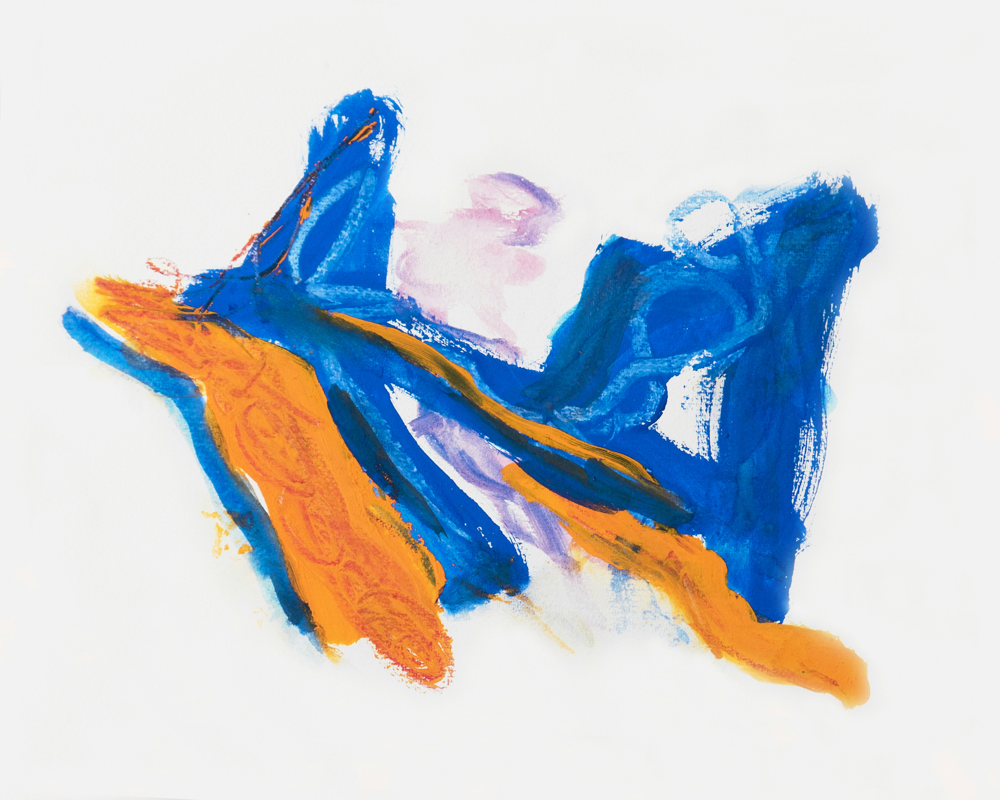

Photo by Fons Heijnsbroek.
The Transit Stop app is a widely used tool for Chicago residents and visitors to check CTA bus and train wait times. However, as a frequent user of the app, I found that its navigation and user experience were not as intuitive as they could be. The app requires users to manually select a route before viewing nearby buses and trains, which adds unnecessary complexity. This case study documents the redesign process aimed at making the app more user-friendly by detecting the user’s location and automatically displaying nearby transit options.
In this project, I took on the role of the UX/UI Designer, responsible for identifying pain points, conducting user research, creating user personas, designing user flows, sketching wireframes, and delivering the final UI design. I collaborated closely with a developer to ensure the feasibility of the new design and its alignment with the technical requirements.
The primary issue with the current Transit Stop app is the need for users to first choose the route of the bus or train they are looking for. This process not only requires prior knowledge of the route but also adds unnecessary steps that could be streamlined. Additionally, this design fails to take advantage of the user’s location, which could be leveraged to automatically present relevant transit information.
By redesigning the app to automatically show nearby buses and trains based on the user’s location, we expect to see:
1. Commuter Clara
2. Tourist Tim
3. Student Sam
1. User Flows: I began by mapping out the current user flow, identifying the pain points at each stage of the process. Next, I designed a new user flow that eliminates the need to select a route, allowing users to see nearby transit options immediately upon opening the app.
2. Sketches: Initial sketches were created to visualize the new layout and navigation. These sketches focused on simplifying the interface and ensuring that the most critical information—nearby bus and train times—was front and center.
3. Wireframes: Low-fidelity wireframes were developed to refine the layout and test the new user flow with a small group of users. Feedback was collected, leading to several iterations before moving on to the final design.
4. User Testing: Usability testing was conducted with a diverse group of participants, including daily commuters, tourists, and students. The feedback confirmed that the new design was more intuitive and required less effort to navigate.
The final design of the Transit Stop app features:
This project highlighted the importance of reducing cognitive load for users, especially in apps that are frequently used on the go. By focusing on simplifying the user experience and leveraging location data, we were able to create a design that is both efficient and user-friendly. Collaboration with the development team also taught me the value of aligning design solutions with technical capabilities to ensure seamless implementation.
Looking ahead, potential enhancements could include: